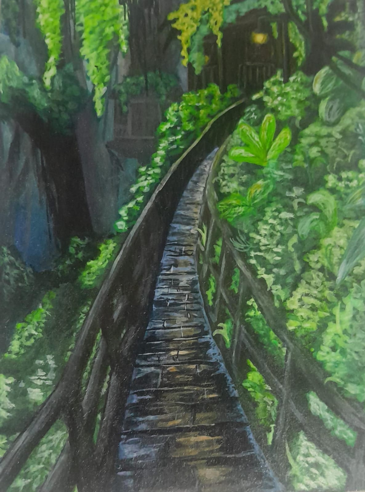
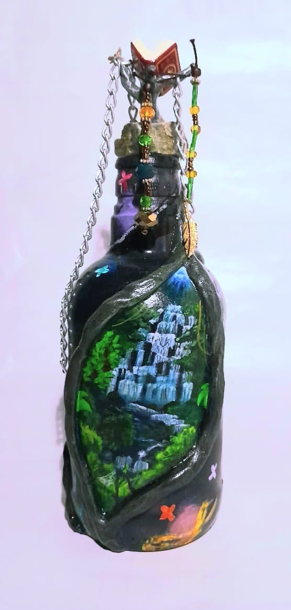
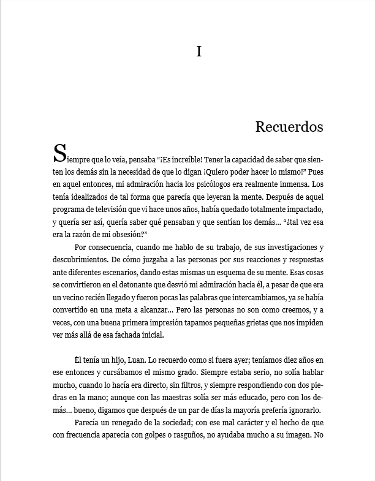

La creatividad es una parte fundamental de mi vida; a través del arte y la escritura expreso ideas y emociones, desarrollando mi imaginación. Disfruto crear piezas únicas y dedicar tiempo a cada detalle, así como dibujar y pintar como forma de expresión artística y relajación, experimentando con colores, formas y estilos. Además, me gusta crear esculturas y realizar manualidades que requieren paciencia, creatividad y dedicación.

Disfruto transformar botellas y objetos simples en piezas decorativas únicas, aplicando diferentes técnicas y materiales que me permiten experimentar con texturas, colores y estilos, y dar nueva vida a elementos cotidianos a través de la creatividad y el detalle.

Me gusta escribir historias y desarrollar personajes, explorando diferentes ideas y emociones, especialmente los conflictos internos, las relaciones humanas y la forma en que las experiencias transforman a las personas. Disfruto construir mundos, atmósferas y personalidades con profundidad, cuidando los detalles emocionales y narrativos para que cada historia tenga identidad propia.
Una de mis historias gira en torno a un personaje reservado que carga con una pérdida silenciosa, cuya vida cambia cuando alguien insiste en quedarse, demostrando que incluso los encuentros más simples pueden convertirse en puntos de inflexión.
